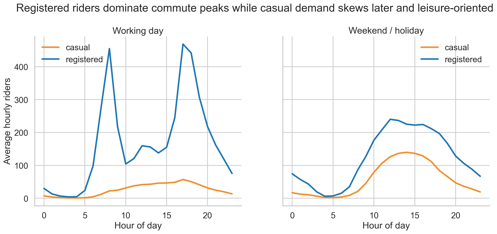
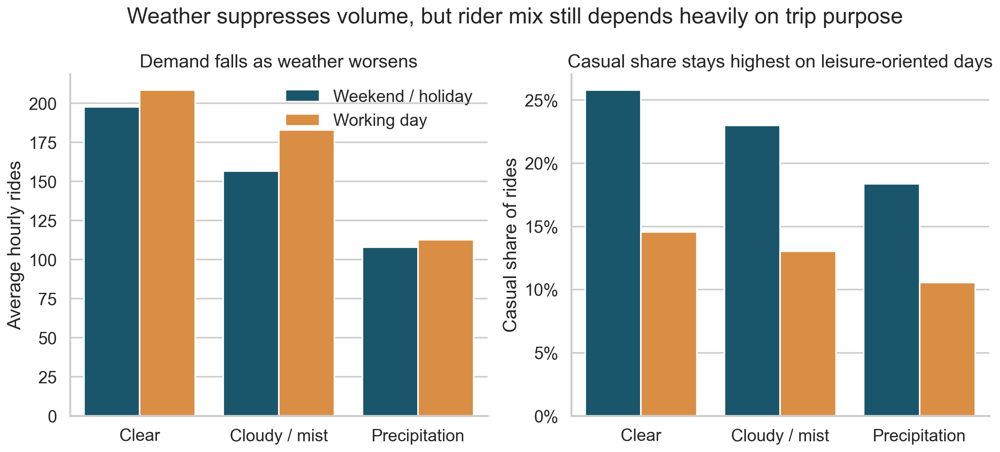
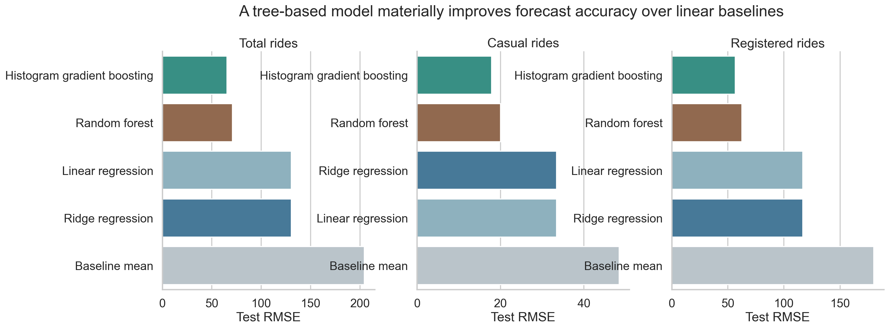
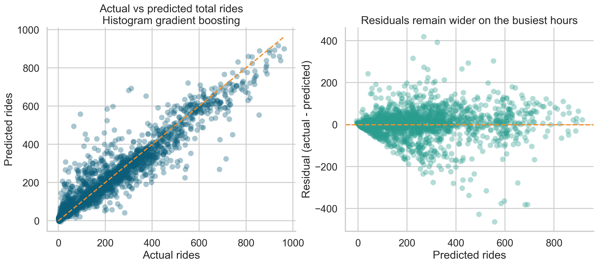

Commute versus leisure behavior
Registered riders peak sharply on working-day commute windows, while casual demand is flatter and later in the day.
An end-to-end analytics project on how bikeshare demand changes across time, weather, and rider type, with a practical forecasting layer for hourly ridership planning.
This project examines how Washington, D.C. bikeshare usage changes across time, weather, and rider segment, then tests how well hourly ridership can be forecast using calendar and weather features. It is framed as a practical analytics problem for operators who need to anticipate demand shifts, not just describe them after the fact.
Capital Bikeshare hourly ridership data covering January 1, 2011 through December 31, 2012.
The project was structured to show full-cycle analytics work without turning the page into a notebook export.
Validated totals, converted dates, checked missing values and duplicates, and mapped encoded fields into readable labels.
Profiled ridership by time, rider type, season, and weather to surface operational demand patterns.
Created rush-hour flags, day-type groupings, cyclical time encodings, and weather buckets to improve clarity and prediction.
Compared a baseline mean, linear regression, ridge regression, random forest, and histogram gradient boosting.
Used a chronological train/test split with MAE, RMSE, R², residual inspection, and held-out actual-vs-predicted comparison.
Registered riders drive the strongest peaks, especially during weekday rush hours, making bikeshare look heavily commute-oriented.
Casual demand rises on warm weekends and holidays, suggesting a more discretionary, leisure-driven use case.
Clear-weather demand averages about 93 more hourly rides than precipitation periods, making weather a practical planning signal.
The highest average hour is 17:00, reinforcing the role of return commuting in total system volume.
Ridership increased meaningfully from 2011 to 2012, indicating stronger adoption as the system matured.
Tree-based models outperform linear baselines, showing that time, weather, and rider behavior interact in ways a simple linear model misses.
The main predictive target was total hourly ridership because it is the clearest operational planning signal for rebalancing and staffing.
The forecasting layer is strong enough to support directional planning, but not so strong that it should be treated like a real-time control system. The biggest remaining misses likely come from omitted drivers such as special events, neighborhood-level demand, and transit disruptions.
These visuals were chosen to reinforce the analytical story quickly rather than reproduce the full notebook.

Registered riders peak sharply on working-day commute windows, while casual demand is flatter and later in the day.

Ridership falls as conditions worsen, but casual share remains highest on leisure-oriented days.

Tree-based models outperform linear baselines across all demand targets, especially for total rides.

The forecast tracks overall demand well, while still struggling most on the busiest hours where peaks are hardest to predict.